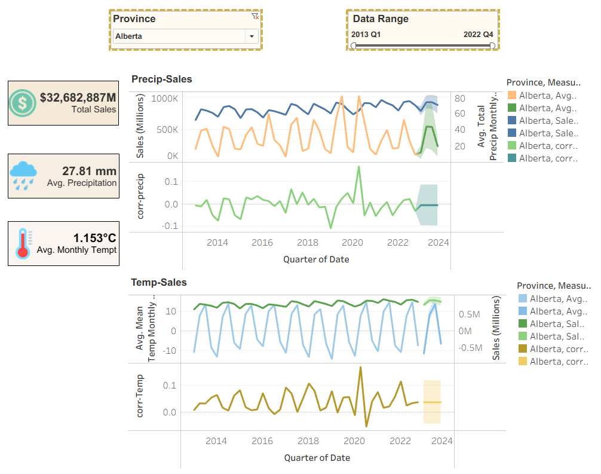
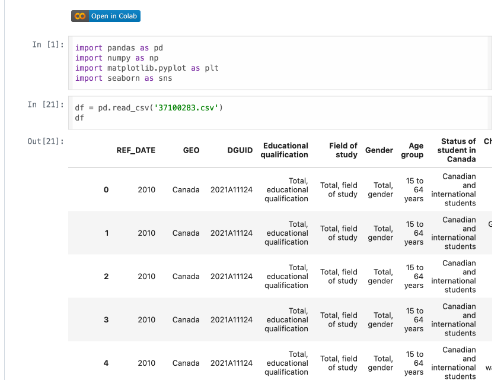

<?xml version="1.0" encoding="UTF-8"?><rss xmlns:dc="http://purl.org/dc/elements/1.1/" xmlns:content="http://purl.org/rss/1.0/modules/content/" xmlns:atom="http://www.w3.org/2005/Atom" version="2.0" xmlns:media="http://search.yahoo.com/mrss/"><channel><title><![CDATA[Qian Li · Data & Business Analyst]]></title><description><![CDATA[PMP-certified analyst with 6+ years in business analysis & data analytics — helping teams make data-driven decisions. SQL · Power BI · Tableau.]]></description><link>https://ada-okoro.github.io/ada-blog/</link><image><url>https://ada-okoro.github.io/ada-blog/favicon.png</url><title>Qian Li · Data &amp; Business Analyst</title><link>https://ada-okoro.github.io/ada-blog/</link></image><generator>Ghost 6.47</generator><lastBuildDate>Sat, 27 Jun 2026 22:01:27 GMT</lastBuildDate><atom:link href="https://ada-okoro.github.io/ada-blog/rss/" rel="self" type="application/rss+xml"/><ttl>60</ttl><item><title><![CDATA[Welcome — data, decisions, and a bit of weather]]></title><description><![CDATA[What this blog is about, and what you'll find here.]]></description><link>https://ada-okoro.github.io/ada-blog/welcome/</link><guid isPermaLink="false">6a4038861af5ca00017ebcce</guid><category><![CDATA[Updates]]></category><dc:creator><![CDATA[Ada Okoro]]></dc:creator><pubDate>Sat, 27 Jun 2026 21:20:36 GMT</pubDate><content:encoded><![CDATA[<p>Hi, I&apos;m <strong>Qian Li (Ada)</strong> &#x2014; a PMP-certified business &amp; data analyst based in Calgary. After 6+ years across insurance, IT, and financial services, I&apos;ve learned that the hard part of analytics isn&apos;t the model; it&apos;s turning messy, real-world data into a decision someone can actually act on.</p><p>This blog is where I share that work in the open: project write-ups, the data-cleaning steps nobody usually sees, and the business takeaways behind the charts. Everything here comes from real datasets and real analysis.</p><p>A few things you&apos;ll find:</p><ul><li><strong>Project deep-dives</strong> &#x2014; objective, data, method, and what the numbers actually recommend.</li><li><strong>Hands-on data prep</strong> &#x2014; Python/pandas, Tableau Prep, and the unglamorous cleaning that makes analysis trustworthy.</li><li><strong>Tools I lean on</strong> &#x2014; SQL, Excel (Power Query/Pivot), Power BI, and Tableau.</li></ul><p>Want to see the code or connect? I&apos;m on <a href="https://github.com/Ada-Okoro?ref=localhost">GitHub</a> and <a href="https://www.linkedin.com/in/qianli-cv/?ref=localhost">LinkedIn</a>. Thanks for stopping by &#x2014; keep learning, keep improving.</p>]]></content:encoded></item><item><title><![CDATA[Does Weather Drive Retail Sales? Climate–Sales Correlation across AB, BC & ON (2013–2022)]]></title><description><![CDATA[A decade of data on how temperature and precipitation relate to retail sales — and what it means for forecasting.]]></description><link>https://ada-okoro.github.io/ada-blog/weather-retail-sales/</link><guid isPermaLink="false">6a4038861af5ca00017ebcc2</guid><category><![CDATA[Data Analytics]]></category><dc:creator><![CDATA[Ada Okoro]]></dc:creator><pubDate>Sat, 27 Jun 2026 20:54:30 GMT</pubDate><media:content url="https://ada-okoro.github.io/ada-blog/content/images/2026/06/dashboard-correlation-ab-1.png" medium="image"/><content:encoded><![CDATA[<p>Retailers plan inventory, staffing, and promotions months ahead &#x2014; so it&apos;s worth asking how much the <em>weather</em> actually moves sales. In this project I analysed a decade of monthly data (2013&#x2013;2022) to measure how temperature and precipitation relate to retail sales across <strong>Alberta, British Columbia, and Ontario</strong>, and what that means for forecasting.</p><h2 id="objective-approach">Objective &amp; approach</h2><p>The goal was to quantify how climate factors influence retail sales, and to translate that into inventory, marketing, and staffing guidance. I combined statistical correlation analysis with industry-level segmentation, supported by Tableau dashboards so both technical and non-technical stakeholders could read the story quickly.</p><h2 id="data-method">Data &amp; method</h2><ul><li><strong>Sources:</strong> Statistics Canada retail trade tables and Environment Canada historical climate records.</li><li><strong>Preparation:</strong> consolidated and harmonised climate datasets, standardised date formats, and organised retailers into <strong>11 industry categories</strong> for comparable segmentation.</li><li><strong>Smoothing:</strong> computed monthly averages to reduce short-term noise and surface underlying trends.</li><li><strong>Integrity:</strong> retained the small share of null values deliberately (negligible impact), and integrated everything by province, year, and month for reproducible analysis.</li><li><strong>Tooling:</strong> Tableau Prep flows for cleaning, Tableau for correlation and seasonality dashboards.</li></ul><figure class="kg-card kg-image-card kg-card-hascaption"><figcaption>Cleaning and shaping the climate &amp; retail data in Tableau Prep.</figcaption></figure><h2 id="key-findings">Key findings</h2><p><strong>1. Precipitation barely matters.</strong> Across all three provinces, precipitation showed negligible correlation with overall sales &#x2014; fluctuating near zero historically and staying insignificant in forecasts (Ontario even leaned slightly negative). For most planning, it can be excluded from predictive models.</p><p><strong>2. Temperature is a small but consistent driver.</strong> Warmer quarters aligned with slightly higher demand in every province. The effect was most pronounced in Ontario, moderate in Alberta and BC, and expected to persist through 2023 &#x2014; useful as a <em>secondary</em> seasonal adjustment, not a primary signal.</p><p><strong>3. Seasonality and promotions dominate.</strong> Recurring Q2&#x2013;Q3 peaks and Q4 holiday lifts drove the bulk of variation, with climate playing a supporting role.</p><p><strong>4. Sensitivity varies a lot by industry.</strong> A few examples from the industry-level analysis:</p><ul><li><strong>High temperature-sensitivity:</strong> Building Materials &amp; Garden Equipment, Gasoline Stations, and Motor Vehicle &amp; Parts Dealers (e.g. BC Gasoline &#x2248; +0.38, Building Materials &#x2248; +0.34 with temperature).</li><li><strong>Precipitation-positive niches:</strong> Electronics &amp; Appliances (BC &#x2248; +0.38), Sporting Goods, and Health &amp; Personal Care (&#x2248; +0.18&#x2013;0.22) &#x2014; wetter periods tracked higher demand. Ontario Building Materials stood out at &#x2248; +0.60 with precipitation.</li><li><strong>Neutral:</strong> Food &amp; Beverage and Clothing hovered near zero.</li><li><strong>Negative/negligible to temperature:</strong> Electronics &amp; Appliances (&#x2248; &#x2013;0.28) and Health &amp; Personal Care (&#x2248; &#x2013;0.22).</li></ul><h2 id="a-closer-look-by-province">A closer look by province</h2><p>Scale and climate differ across the three provinces, but the signal is consistent. British Columbia is the mildest and wettest (avg ~10.9&#xB0;C, ~119&#xA0;mm precipitation), Alberta the coldest and driest (~1.2&#xB0;C, ~28&#xA0;mm), and Ontario sits in between (~4.6&#xB0;C, ~86&#xA0;mm) while being by far the largest retail market. Despite these differences, precipitation tracks near zero with sales in every province, while temperature shows a small positive correlation &#x2014; strongest in Ontario. (Alberta&apos;s dashboard is shown at the top of this post.)</p><figure class="kg-card kg-image-card kg-card-hascaption"><figcaption>British Columbia &#x2014; precipitation vs. temperature correlation with sales.</figcaption></figure><figure class="kg-card kg-image-card kg-card-hascaption"><figcaption>Ontario &#x2014; precipitation vs. temperature correlation with sales.</figcaption></figure><figure class="kg-card kg-image-card kg-card-hascaption"><figcaption>Industry-level temperature &amp; precipitation correlations (Alberta example).</figcaption></figure><h2 id="what-id-recommend">What I&apos;d recommend</h2><ul><li>Incorporate <strong>temperature as a secondary regressor</strong> for climate-sensitive sectors; <strong>exclude precipitation</strong> from general models given its negligible predictive value.</li><li>Anchor planning to <strong>established seasonal peaks</strong> &#x2014; e.g. Ontario ramping inventory in Q2&#x2013;Q3, Alberta focusing on Building Materials and Gasoline Stations.</li><li>Keep <strong>contingency plans</strong> for extreme-weather demand spikes (heat waves), even though climate isn&apos;t a dominant driver overall.</li></ul><p>Full dataset, Tableau workbook, Tableau Prep flows, and the executive briefing report are on GitHub: <a href="https://github.com/Ada-Okoro/Climate-and-Sales-Correlation?ref=localhost">Climate-and-Sales-Correlation</a>.</p>]]></content:encoded></item><item><title><![CDATA[Cleaning & Filtering Alberta Graduate Income Data with Python (pandas)]]></title><description><![CDATA[Turning a bulky Statistics Canada table into a focused, analysis-ready dataset.]]></description><link>https://ada-okoro.github.io/ada-blog/alberta-graduate-income/</link><guid isPermaLink="false">6a4038861af5ca00017ebcc9</guid><category><![CDATA[Data Analytics]]></category><dc:creator><![CDATA[Ada Okoro]]></dc:creator><pubDate>Sat, 27 Jun 2026 20:53:30 GMT</pubDate><media:content url="https://ada-okoro.github.io/ada-blog/content/images/2026/06/notebook-income-filter.png" medium="image"/><content:encoded><![CDATA[<p>Public datasets from Statistics Canada are rich &#x2014; and often unwieldy. A single table can carry dozens of administrative columns and hundreds of thousands of rows covering every province, demographic, and metric. This short project shows how I turned one such table into a focused, analysis-ready slice using Python and pandas.</p><h2 id="the-goal">The goal</h2><p>Extract the <strong>median employment income of Alberta graduates</strong> &#x2014; measured <strong>two and five years after graduation</strong> &#x2014; and break it down by the dimensions that matter for comparison: <strong>gender</strong>, <strong>age group</strong>, and <strong>student status</strong> (Canadian vs. international students).</p><h2 id="the-data">The data</h2><p>The source was Statistics Canada table <code>37100283</code> (graduate outcomes / employment income). Out of the box it includes many fields that don&apos;t help analysis &#x2014; DGUIDs, vectors, coordinates, scalar factors, status flags, and more.</p><h2 id="the-approach-pandas">The approach (pandas)</h2><ol><li><strong>Trim the noise:</strong> dropped administrative columns (<code>DGUID</code>, <code>VECTOR</code>, <code>COORDINATE</code>, <code>SCALAR_FACTOR</code>, <code>SYMBOL</code>, <code>STATUS</code>, and similar) to keep only analytically meaningful fields.</li><li><strong>Normalise dates:</strong> parsed <code>REF_DATE</code> into proper datetime values and derived a clean reference year.</li><li><strong>Filter deliberately:</strong> kept <code>GEO = Alberta</code> and graduates reporting employment income, then segmented by gender (Woman / Man), age group (15&#x2013;34, 35&#x2013;64), and status (Canadian / International), for the median-income-2-years and 5-years-after-graduation metrics.</li><li><strong>Export:</strong> wrote the result to <code>filtered_alberta_income.csv</code> (UTF-8) &#x2014; a compact, ready-to-visualise dataset.</li></ol><h2 id="why-it-matters">Why it matters</h2><p>Most of the value in analytics happens before the chart: choosing the right slice, keeping the data honest, and producing something a stakeholder can use immediately. This filter turns an unwieldy national table into a clean Alberta-specific view of graduate earnings that&apos;s easy to chart and compare.</p><p>The notebook (runnable in Colab) is on GitHub: <a href="https://github.com/Ada-Okoro/Climate-and-Sales-Correlation/blob/main/median_income_Filter.ipynb?ref=localhost">median_income_Filter.ipynb</a>.</p>]]></content:encoded></item></channel></rss>